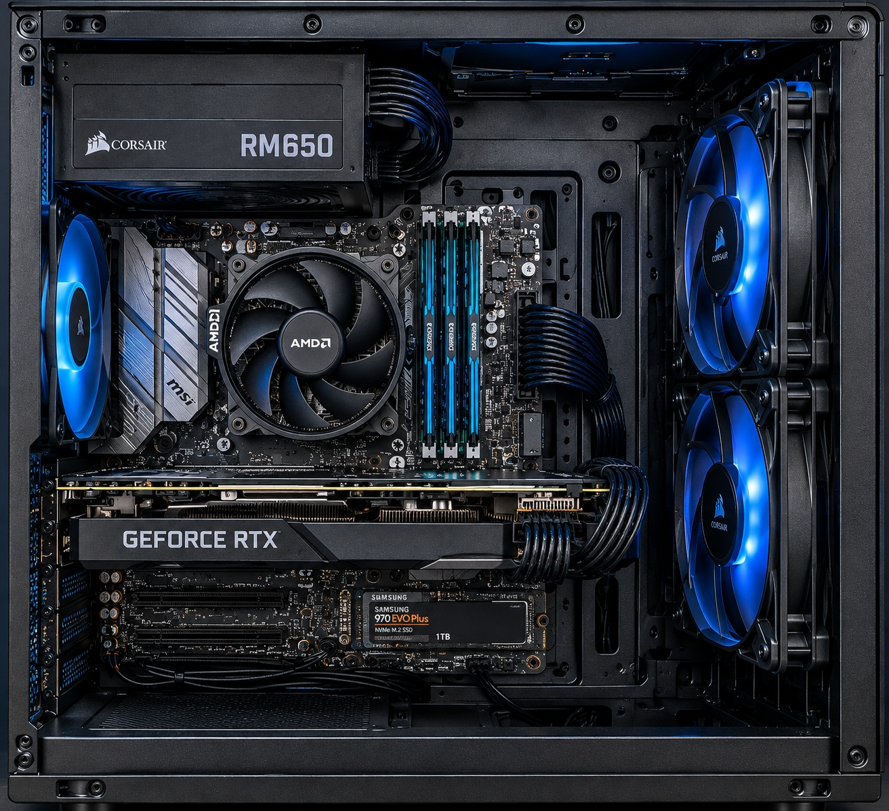
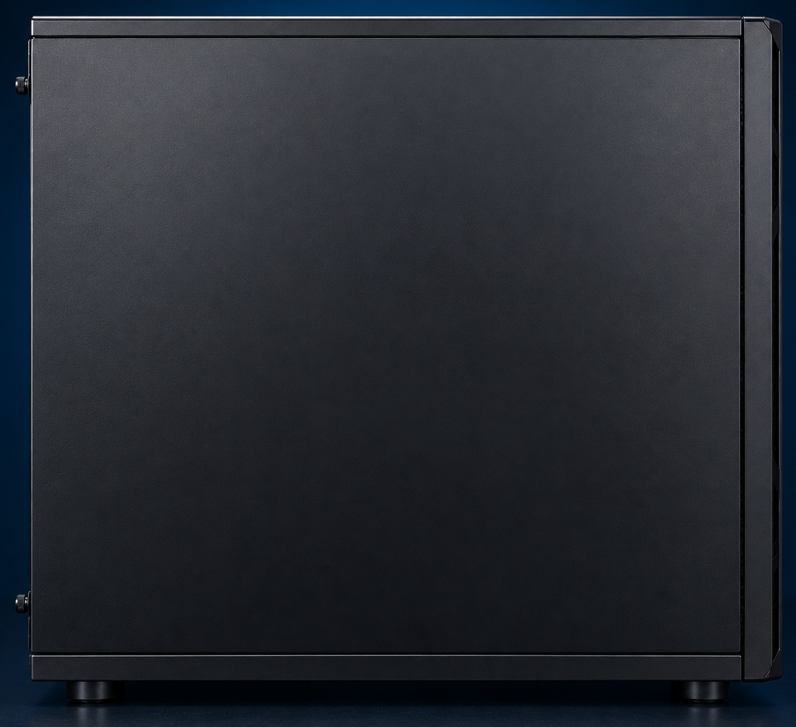

A computer might look like a simple black box from the outside. But behind the side panel, seven important components are working together. Ready to take a look?


Choose the component that matches the description.